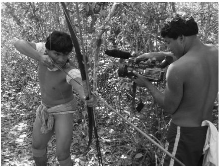

民族志纪录片这个词有很多含义。各类电影节，比如纽约的美国自然历史博物馆每年举行的高水准的玛格丽特·米德电影节的策划者们，通常将民族志纪录片定义为展现其他文化、异域民族和异域风情的影片。电视节目策划人也将他们投资制作的一些片子叫做民族志纪录片，这类影片以娱乐为目的，用异域的文化元素让观众感到着迷或震惊。莱斯·布兰克等独立纪录片制作人，带着同理心和尊重的态度，拍摄世界范围内的音乐和食物亚文化，他们也很乐意把自己的纪录片称为民族志纪录片。人类学家们则希望以更科学的方法来运用这一名词。人类学家杰伊·鲁比提出，一部影片只有由专业的民族志学者拍摄、运用了民族志实地调查方法、其目的也是为了制作给同行评议的纪录片，才能被叫做民族志纪录片。
但这几种不同阐释都有一个共同点，即“他者”的概念——民族志纪录片是站在某一文化的外部，对其内部略窥一斑。这样的说法又将纪录片原来就有的伦理道德风险升级了。纪录片制作人和影片表现对象之间的关系，在民族志影片中显得尤其突出，因为影片表现对象和制作人比起来，常常在社会权力上处于弱势地位，拥有较少的媒体表达手段。人类学家和电影人索尔·沃思讲过的萨姆·亚其的故事，令人类学家们津津乐道。20世纪70年代，沃思和约翰·阿代尔一起完成了“纳瓦霍人 [23] 电影项目”。这一项目试图教会纳瓦霍印第安人一些电影制作技巧，而并不将任何审美或者意识形态的标准强加于他们。当制作人向老萨姆·亚其描述这一项目时，他问道：“拍电影对羊有坏处吗？”纪录片制作人向他保证对羊不会有任何坏处。亚其又问：“那拍电影对羊有好处吗？”“啊，没有。”制作人回答道。“那为什么要拍电影？”沃思后来在文章中写道，“萨姆·亚其的问题一直在我们脑海中挥之不去。”
赚钱
对于“为什么要拍电影”这一问题的早期答案非常直接：为了赚钱。异域探险影片就是在这个时期成为一种固定的影片类型的，这类影片带有人类学研究的元素（记录“原始”文化、和拍摄对象共同生活、告诉拍摄对象电影的故事结构）。弗莱厄蒂的《北方的纳努克》启发了后来的人类学纪录片制作人。梅里安·C.库珀曾担任联合制片人，推出过旅行纪录片《草》（1925），影片讲述了一个游牧部落的故事，很精彩，票房却很惨淡；后来他制作了相当卖座的影片《变迁》（1927），又出品了十分成功的《金刚》（1933）。《变迁》记录了制作人与暹罗北部的老挝人共同生活18个月的经历，以日常生活作为切入点，叙事风格易于被观众接受。村民们在与豹和虎的斗争中生活。在经历了一次野象踩踏过后（踩踏场景是通过演出复现的），村民们不仅驯服了野象，还利用它们重建平静的丛林生活。
异域探险纪录片又催生了充满奇幻色彩的丛林纪录片和“震惊纪录片”，如1962年的《世界残酷奇谭》及其续集。在《世界残酷奇谭》中，各种不同的仪式画面拼接在一起，比如新几内亚的部落人用棍棒打死一头猪的震惊画面后面紧接着一些老年游客笨手笨脚地学习夏威夷呼啦舞的滑稽场面，影片运用了解说和背景音乐以减轻画面之间的不协调感。
更高端一些的纪录片则向观众展示其他文化的日常生活，这些影片并不声称自己对民族志研究有益，却往往因为和民族志有关而获益。《死鸟》（1963）展现了发生在新几内亚西伊里安查亚省的生死故事。片中，艺术家罗伯特·加德纳用了从弗莱厄蒂那里学来的技法，利用“真实的事件”编造“真实的故事”。许多评论家赞扬他的诗意情感，以及他表现普世主题的能力，称他的作品有民族志的特征（加德纳本人从未称自己的作品为民族志纪录片）。《极乐森林》（1985）记录了印度贝拿勒斯的死亡仪式和日常生活，加德纳在片中表达了对死亡和生命意义的思考，古怪却震人心魄，有些地方令人毛骨悚然。该片向北半球的观众播放，这些观众基本上对影片中的行为一无所知；南亚人、印度教徒和人类学家则因片中缺乏充分的文化背景而干着急。
与习惯手法斗争
随着20世纪六七十年代电视市场的蓬勃发展，异域文化纪录片系列也迎来了春天，比如英国格拉纳达电视台的《消失的世界》（1970——1993）和日本电视台的《我们的奇妙世界》（20世纪60年代中期至1982年）。这些纪录片常常诱使观众觉得他们在观看未受污染的文化仪式，这些仪式一旦接触了现代世界就会被彻底摧毁，虽然人类学家和纪录片所拍摄的文化群体都会对此表示反对。
如今，绝大多数跨文化题材的纪录片都不会清楚地声明自己的拍摄目的。此类纪录片常常向北半球的观众展示其他地区的人。其中有些片子会以长相出众的人物、生动多彩的仪式，以及充满危机、暴力和灾难的情节来吸引观众。它们常常声称要给文明世界里的观众最后一个机会，看一眼正在消失的异域文化，《哭泣的骆驼》便是如此。国家地理频道的《禁忌异域》（2003年开播），这一周向观众展示世界各地古怪的身体装饰行为，下一周又向观众展示奇异的饮食文化。其他一些作品试图以朴实的方式带领观众领略他人的生活方式，如荷兰导演伦纳德·勒泰尔·黑尔姆里希的《月亮的形状》（2004）以真实电影的风格，记录了雅加达一位妇女的经历，这位寡居的妇女信奉基督教，而她的儿子皈依了伊斯兰教，影片让西方观众窥视到了他们可能想都想不到的文化冲突。
大多数跨文化题材纪录片的制片人发现，大众传媒的习惯手法会使影片的自反性、实验性和开放性阐释受到局限。澳大利亚制作人罗宾·安德森和鲍勃·康奈利的作品，以一种健康的方式试图突破商业媒体的限制，妙趣横生。他们的首部作品《第一次接触》（1983）很多人都看过。影片中，制作人为巴布亚新几内亚的村民带来了他们第一次和白人——男性勘探者——接触的录像。勘探者当初对于自己探险历程的记录，又被从村民们的视角重新解读。该片也表现了这种日益扩大的接触带来的后果——怀孕、疾病、机械和旅游经济，都是巴布亚人意想不到的。
《第一次接触》以巧妙的方式将自反性和现实主义传统拼接在一起，后来还出了两部续集。该片既让观众以批判的眼光重新审视勘探者拍摄的影片脚本，又通过安德森和康奈利自己的影片画面向观众传达了一种确定的意义；传达这种意义的手段是缜密的编辑、紧凑的叙事，以及对观众眼前的景象进行的时而直接时而含蓄的解释。
是否科学？
社会科学家最初将民族志纪录片想象为一种科学工具。早期的人类学家，如弗朗茨·博厄斯（他是这一领域的开创者）、玛格丽特·米德和格雷戈里·贝特森都曾经为一些仪式和行为拍摄过篇幅很短的、纯记录性质的影片。德国的哥廷根科学电影研究所曾经几十年如一日地出品五分钟系列片，专门记录特定的仪式和生产手段，并且配有文字稿。直到今天，各个国家还有大量这样的档案纪录片。但是，这些档案的制作者在拍摄这些画面的时候，可能并不总会明确地想到这样的问题：这些行为对于行为的主体来说意味着什么？
这些信息能够说明什么问题？镜头中的人是在进行真实行为时被抓拍到，还是在“搬演”某个生活片段？
人类学家和拥有人类学知识的制作人很快就开始探究这些问题。美国富家少年约翰·马歇尔和他父亲一起在南非游猎时，第一次熟识了卡拉哈里游猎部落。几年后，他利用为桑族人（当时南非的白人将他们叫做“丛林人”）拍摄的无声脚本，制作了影片《狩猎者》（1957）。他公开表示希望自己成为卡拉哈里人的弗莱厄蒂，赞美游猎部落成功对抗自然的故事。该片上映后票房取得了佳绩，也常常成为课堂上的教学材料，但它同样因为罗曼蒂克的倾向而饱受诟病。影片受到的争议让马歇尔重新审视自己的作品，他将影片脚本重新剪成一系列的教育片。和他一起从事这项工作的人当中有年轻的摄影师蒂莫西·阿施，阿施后来攻读了人类学学位。此类重点突出、篇幅短小并配有讨论材料的纪录片，后来被广泛用于课堂教学。
马歇尔之后继续与真实电影运动的先锋人物合作，其中有弗雷德·怀斯曼（为其拍摄了《提提卡蠢事》）、D.A.佩内贝克和弗莱厄蒂的弟子理查德·利科克。1980年，马歇尔和阿德里安娜·林登一起，为一个南非女人制作了一部传记纪录片，影片脚本的拍摄时间横跨三十多年，而这三十多年正是桑族人的权利遭到严重损害的时期。这部为美国公共电视频道制作的纪录片名为《一个布须曼女人的故事》（1980），该片和他第一部纪录片中孤芳自赏的浪漫风格形成鲜明对比，标志着马歇尔进一步认识到制作人与拍摄对象之间的权力关系。
蒂莫西·阿施在与马歇尔合作之后，又与在巴西低地研究亚诺玛米部落的人类学家拿破仑·沙尼翁展开了合作。在那里，阿施和沙尼翁制作了大量纪录片，并且在此过程中探索如何再现他们自己对于亚诺玛米文化的理解与体验。《斧战》（1975）代表了两人合作的成就，也是对在此之前的民族志纪录片的批评。影片中，阿施和沙尼翁见证并拍摄了村子里一场斧战三分之二的过程。阿施在影片中展示了几种不同的版本：第一种直接展现了他所有的拍摄脚本；第二种以慢动作的形式，配以指示箭头，更清晰地展现了人物和事件；第三种分析了亲属关系；最后一种是经过精妙剪辑的故事版，让人联想起学生习惯于看到的民族志纪录片。因此，《斧战》迫使观众问自己一个问题，即他们对自己看到的一切会作何种解读。虽然这一影片的做法未被很多人效仿（也许是因为这一模式在商业上不可行），它却引发了一场人类学的论争，即怎样才能最好地使用素材脚本。
让·鲁什
从20世纪60年代开始，科学客观性神话的打破在人类学领域内掀起了轩然大波。同一时期，带有民族志倾向的纪录片制作人又被真实电影这一体裁所吸引。让·鲁什就是在这两股潮流影响下进行创作的人类学家兼纪录片制作人。他既是最有创意的民族志纪录片制作人之一，又是给这类影片带来最大冲击的人物之一。
鲁什原来在西非当过工程师，这一职业经历促使他回到法国之后开始学习人类学。最终，他制作了一百多部影片，很多都是与他的拍摄对象合作完成的。他从弗莱厄蒂和韦尔托夫那里都获取了灵感。鲁什非常尊崇弗莱厄蒂和拍摄对象的亲密关系以及他亲身体验拍摄对象生活的方法。同时他也欣赏韦尔托夫的做法：热切地捕捉生活的本来面貌，然后紧紧抓住编辑这一现实的权利，迫使观众意识到制作人的存在。
鲁什的第一部重要作品《通灵仙师》（1955）让他对自己之前的方法产生了反思。该片向观众展示了一场周末的降灵会：参加降灵会的、在加纳务工的西非移民被殖民地官员的灵魂附体，扮演起后者的角色来。鲁什在片尾的解说中表明，这场仪式既是对他们的殖民生存状态的表达，又是从这一状态中的暂时解脱。该纪录片让欧洲观众大为震惊，也引起了非洲观众的恐慌，因为他们担心欧洲人会认为自己不开化。殖民时代结束后，左翼评论家曾猛烈抨击该片的结尾，认为其带有自觉高人一等的色彩。
虽然鲁什本人从未对该片表示否定，但他此后却开始更加注重与拍摄对象之间的合作。同时，他也不断地开展实验，试图展现拍摄对象的主体性，常常借助于虚构、幻想和角色扮演等手段。比如，在《我是一个黑人》（1957）这部影片中，年轻的桑海人 [24] 当起了演员，扮演以自己的生活为蓝本塑造的角色。这部由制作人和拍摄对象合作完成的纪录片，反映了一个移民务工人员一周的生活。鲁什在这部影片中开始明确地展现他的方法：用镜头作为刺激源或催化剂，展现社会冲突；这一方法在鲁什记录自己的“部落”——巴黎人的影片《夏日纪事》中有进一步的展现。
鲁什的目标是向电影中缺乏反思性的方法宣战，无论这些方法是与科学还是与艺术有关。针对人类学这一学科，鲁什说他想要对其进行改造：“过去的人类学是殖民主义的大女儿，是掌握着权力的群体拷问没有权力的群体的手段。我想要以一种共享的人类学来取而代之……即一种不同文化群体之间的人类学对话。对我来说，这一领域是未来的人类科学。”而对于纪录片，他则认为对他来说：
鲁什拍摄针对其他文化群体的纪录片，有三个原因。首先，这些影片当然是为了他自己而拍摄；其次，他是为了呈现给一般的观众；第三，他制作这些影片是因为“电影是唯一的方式，可以让别人知道我怎样看待它”，以及它是否具有参与性。纪录片成了改变人类学关系的一种方式。“正是由于得到了反馈，人类学家才不再像昆虫学家那样观察自己的研究对象（对其俯视），而是认为其促进了相互理解（从而获得尊严）。”直到今天，关心民族志影片中权力与意义话题的人，还会回头研究让·鲁什。
和谁一起制作
在缩小拍摄者和被拍摄者之间的权力鸿沟方面，鲁什作出了大胆的创新。其他民族志纪录片制作人一边利用这些创新，一边也进行自己的拍摄实验。戴维·麦克杜格尔和朱迪思·麦克杜格尔夫妇曾在人类学专业学习，并以电影的形式呈交毕业作品。他们制作了一些特色鲜明、富有思想性的纪录片，体现并主张“参与影片”的理念——他们更喜欢用这个词，而不是“真实电影”，虽然他们的作品都是经典的观察式的。麦克杜格尔夫妇的电影都有一个特点，即公开对电影中拍摄对象的文化习性和文化选择表示尊敬，而且并不要求观众喜欢或是同情这些拍摄对象。在纪录片《婚礼骆驼：一桩图尔卡纳婚姻》（1976）中，麦克杜格尔夫妇追踪拍摄了他们熟悉的肯尼亚部落内一桩婚礼的商谈过程。影片展示了一种与当代西方截然不同的婚姻观。同时，麦克杜格尔夫妇的选择也展示了他们自己的信念：关于图尔卡纳的影片暗示他们支持游牧民族有权按照自己的方式去生活。戴维·麦克杜格尔声称他想要“使纪录片成为与现实世界互动的领地，让纪录片积极地直面现实，并在此过程中靠自身力量成为一种探索方式”。
拍摄对象的参与也是一种积极的、反殖民的斗争行动。比如，《拍电影》（1996）生动记录了澳大利亚和新西兰整整一代民族志纪录片制作人的故事。20世纪六七十年代，澳大利亚人开始重新思考自己与原住民的关系；1975年，新几内亚取得了独立，人类学家和纪录片制作人开始将自己视作进步人士，为帮助原住民重拾尊严和自我形象而工作，有时原住民也参与这样的工作。这些影片展现了很多制作人和人类学家制作影片时遇到的问题。
澳大利亚人类学家杰里·利奇、电影制作人加里·基尔迪和特罗布里恩群岛（属巴布亚新几内亚）的一个政治组织一起联合制作了影片《特罗布里恩的板球》（1979）。该片聚焦于岛上居民的板球运动；岛民对前殖民者带来的这项运动进行了改造，使其以优雅的方式展现他们自己的文化。他们利用这项运动完成了一项转变：从致命的战争到游戏的、象征性的战争。他们和鲁什的拍摄对象一样，远远不是民族志需要抢救的受害者，而是富有创意的文化创新者。该片采取白人的视角对白人说话，也对特罗布里恩群岛的居民讲述关于他们自己的故事。纪录片制作人也可以逆转镜头。澳大利亚人丹尼斯·奥罗克和巴布亚人一起制作了尖锐讽刺的纪录片《食人之旅》（1987），影片中那些被视作奇异生物的，正是来巴布亚旅行的游客，他们常常因为奇怪的举止而让当地人感到困惑不解。
由谁制作
人们越来越关注民族志纪录片中拍摄对象的参与和分享，加上原住民和新生国家的需求不断增长，原住民制作的纪录片数量开始上升。这也改变了影视人类学这一领域。费伊·金斯伯格和其他一些人开始提出，这一领域应当和媒体人类学相结合。这一课题内部的一个大问题是民族志作品的传统拍摄对象制作自己的媒体作品的能力。金斯伯格、埃里克·迈克尔斯、乔治·斯托尼和洛娜·罗思等人在捍卫原住民文化的自我表达时，和他们分析原住民文化时一样出色。
20世纪70年代，在“第四世界” [25] 、“第一民族” [26] 或原住民激进运动的影响下，产生了帮助原住民制作人的运动，拍摄影片的成本也随之降低了。在加拿大，为了增进不同社会群体之间的融合，增强加拿大低存在感群体再现自己形象的能力，加拿大国家电影局开展了“为改变而挑战”项目，并与原住民激进运动人士合作。项目中诞生的一些纪录片，成为原住民收回土地和土地使用权宣传活动的一部分，如《你在印第安人的土地上》（1969）记录了莫霍克印第安人因为白人违反条约而进行的一项抗议。再比如《米斯塔西尼的克里族猎人》（1974）赞扬了北部克里族的狩猎采集文化，同时指出这一文化正受到一个水电站项目的威胁。加拿大原住民在为自己的地区和政府进行沟通方案谈判时，从这些合作项目中学到了东西，最终在1999年获得区域自治 [27] 。
在拉丁美洲，巴西印第安人通过“摄像机进村”项目学会了使用影像记录传统文化。他们用影像再现传统习俗，记录他们与白人之间的谈判，最终将他们自己生活中的神话和故事讲述给其他人。一些作品是针对外来者制作的，这些作品故意采用天真的视角。比如《伊邦小孩的影像信》（2004）就采取了影像书信的方式。另外，印第安人还通过纪录片重述神话、记录仪式，以保存知识或提升对民族文化财富的认识。不仅如此，印第安人（这次是基库洛族人）还用纪录片将过去的神话传说与现在的仪式及日常生活联系起来，比如《佩基果的气味》（2006）就是如此。
澳大利亚的原住民部落也制作影片来记录自己的斗争，如《两种法律》（1981）提出了认可原住民法律和风俗的迫切性，影片在一个部落的协助下拍摄完成。特蕾西·莫法特等原住民艺术家拍摄的作品，不仅仅记录了真实的生活，还运用了实验和虚构的方法。通过“乌合之众”项目，原住民中的青少年不仅仅完成了一项持续的录影，还建立了在线网站和社区。芬兰萨米人导演保罗——安德斯·西马则在《苔原的遗产》（1995）中，向外界展示了遭遇生态危机的驯鹿文化。

图12 通过“摄像机进村”项目，亚马逊地区的印第安人制作了《佩基果的气味》等电影，将民族志纪录片制作的视角变成了原住民的视角。塔库玛·基库洛和玛丽萨·基库洛导演，文森特·卡雷利协助完成，2006年
属于主流文化的人常常担心媒体制作给原住民文化带来的影响。原住民纪录片制作人和激进主义者常常觉得这种担忧不可理喻，或者简直带有侮辱意味。主流文化的这种担忧之所以产生，经常是由于它将传统文化看作静止不变的事物，而没有认识到其作为灵活的上层建筑，会随着新信息的到来拥有新的形式，正如《特罗布里恩的板球》中所展现的那样。而且，原住民激进主义者辩称，他们也会不可避免地遭到现代传媒方式的轰炸，因此应当给他们途径来表达和消费这些传媒方式。如果与此同时原住民缺乏讲述和传播自己故事的能力（因为对于扑面而来的大众传媒，他们几乎没有任何控制力），大众传媒会变成费伊·金斯伯格说的“浮士德契约”；原住民出卖自己的文化灵魂，换得对媒体的使用权。和其他的社会不平等一样，这样的不平衡很难通过技术来解决。
为谁制作？为什么而制作？
民族志纪录片是为谁而制作的？科学家、拍摄对象还是电视观众？能否兼而有之，或者有一个共同的目标？这些仍然是人们热议的话题。到目前为止，人类学家还没有找到可以形成一种科学拍摄方法的资金和知识框架。教师们通常都会运用商业或者准商业电视市场上的作品。原住民对自己的作品常常有着明确而实际的目标：记录自己的文化、向当局提出警告、和其他文化群体交流文化信息，或是成为白人的教材。不过，他们很少能被大众媒体和北半球的广大观众注意到。
关注文化事件与文化行为的纪录片，面临着跨越文化界限的挑战，在主题和观众方面都是如此。让·鲁什用其始终如一的乐观精神去应对这些挑战，而这一点一直是人类学纪录片的关键。